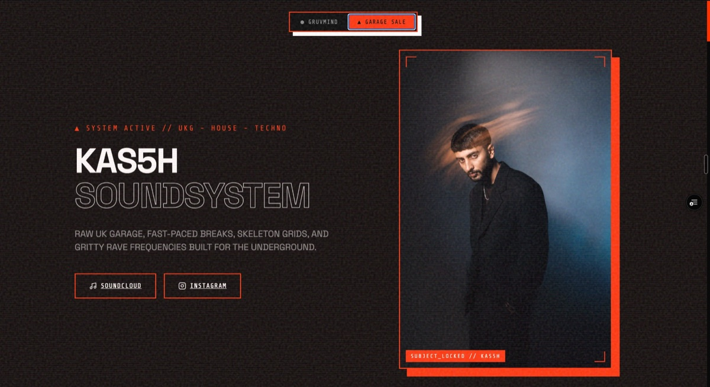

Omar
Designs and builds websites
Everything here is live
Portfolio_26
[Scroll to explore]
Instagram ↗
GitHub ↗
Featured works[008]
See aboutWeb designer,
also the developer
Eight websites, each one built end to end: design, code and launch. Commodity trading, real estate, a festival, DJs and a voice agent. Every link on this page opens the real, running site.
Dubai_Working anywhere

Open site